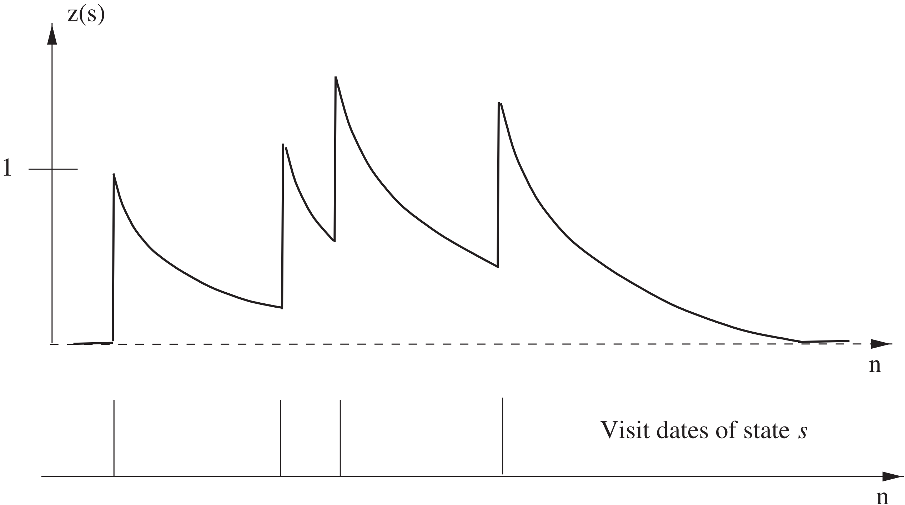

强化学习基础算法
动态规划算法（Dynamic Programming）
在智能体已知或能够学习到环境模型（状态转移概率 P、奖励函数 R）时可以采取动态规划算法进行求解。
策略迭代方法
在有限期规划（t∈[0, T]）中，贝尔曼期望方程实质上是一个动态规划转移方程，其中动态规划状态为每个规划时间步上的价值函数 v(t)(s) 和 q(t)(s, a)，初始状态即 T 时刻的价值函数：
q(T)(s, a)=R(s, a)v(T)(s)=a∑q(T)(s, a)π(T)(a∣s)
其中 π(t) 为 t 时间步上的马尔可夫随机策略，进而通过前向递推即可得到每个时刻的状态价值函数：
q(t)(s, a)=R(s, a)+γs′∑v(t+1)(s′)p(s′∣s, a)v(t)(s)=a∑q(t)(s, a)π(t)(a∣s)
在静态马尔可夫随机策略下，转移方程可以改写为：
v(t)(s)=a∑q(t)(s, a)π(a∣s)=Rπa∑R(s, a)π(a∣s)+γs′∑v(t+1)(s′)pπa∑p(s′∣s, a)π(a∣s)=Rπ(s)+γs′∑v(t+1)(s′)pπ(s′∣s)
由于无限期规划下转移方程算子 Lπ:V↦V 是度量空间 ⟨V, L∞⟩ 上的压缩映射：
∥∥∥∥Lπ(v1)−Lπ(v2)∥∥∥∥∞=γ∥∥∥∥∥∥s′∑(v1(s′)−v2(s′))pπ(s′∣s)∥∥∥∥∥∥∞=γsmax∣∣∣∣∣∣s′∑(v1(s′)−v2(s′))pπ(s′∣s)∣∣∣∣∣∣=γ∣∣∣∣∣∣s′∑(v1(s′)−v2(s′))pπ(s′∣s⋆)∣∣∣∣∣∣≤γs′∑∣∣∣∣v1(s′)−v2(s′)∣∣∣∣pπ(s′∣s⋆)≤γs′max∣∣∣∣v1(s′)−v2(s′)∣∣∣∣=γ∥∥∥∥v1−v2∥∥∥∥∞
因此通过转移方程反复迭代后 v(s) 会收敛到算子 Lπ 的不动点，即贝尔曼期望方程 v=Lπ(v) 的解 vπ。贝尔曼期望方程的解实质上是对策略 π 的评估，为了提升策略的状态价值，可以对策略进行单步提升：
π+∈δ∈DAargmaxLδ(vπ)=δ∈DAargmaxa∑qπ(s, a)δ(a∣s)=δ∈DAargmax{Rδ(s)+γs′∑vπ(s′)pδ(s′∣s, a)}
单步提升可以直接利用贪心的方法得到一个确定性的策略 π+∈D
π+(s)∈aargmaxqπ(s, a)
单步提升后的策略 π+ 满足
Rπ++γPπ+vπ=Lπ+(vπ)=δ∈DAmaxLδ(vπ)=L(vπ)≥Lπ(vπ)=vπ
因此
Lπ+(vπ+)=vπ+Rπ++γPπ+vπ++γPπ+vπ−γPπ+vπ+≥vπ ⇒ (I−γPπ+)vπ+≥(I−γPπ+)vπ ⇒ vπ+≥vπ
由于贝尔曼最优方程 v=L(v) 的解存在且唯一，因此在 Lπ+(vπ)=L(vπ)=vπ 时，有 vπ=v⋆，π=π⋆
价值迭代算法
策略迭代算法的一次迭代包含策略评估和策略提升，而价值迭代则直接利用贝尔曼最优方程算子 L 的压缩映射性质迭代得到最优状态价值函数 v⋆(s)，同时在有限期规划中也可以看做是动态规划的转移方程：
v(t)(s)=L(v(t+1))=amaxq(t)(s, a)=amax{R(s, a)+γs′∑v(t+1)(s′)p(s′∣s, a)}
其中初始状态为 q(T)(s, a)=R(s, a)，通过不断向前迭代即可得到每个时间步的最优动作价值函数 q⋆(s, a)，通过最优动作价值函数可以恢复出每个时间步的最优确定性策略 π(t)(s)∈argmaxaq(t)(s, a)。
蒙特卡洛算法（Monte-Carlo）
蒙特卡洛算法是一大类随机算法的总称，在后续的强化学习算法中被广泛应用，例如：
近似期望
为了估计随机变量函数 f(x):Ω↦R 关于服从分布 p(x) 的随机变量 x 的数学期望：
Ex∼p(x)[f(x)]=∫Ωf(x)p(x)dx
可以通过分布 p(x) 进行独立非均匀采样得到 Xn={x1, x2, ⋯, xn}，通过样本函数值的均值来近似期望：
qn=n1i=1∑nf(xi)≈Ex∼p(x)[f(x)]
在实际中通常使用增量更新的方式进行计算：
qn=n1i=1∑nf(xi)=n1[(n−1)qn−1+f(xn)]=qn−1+n1(f(xn)−qn−1)
进一步使用学习率 αn 来替换式中的 n1 得到 qn=qn−1+αn(f(xn)−qn−1)，其中 α 需要满足以下性质：
n→∞limt=1∑nαt=∞n→∞limt=1∑nαt2<∞
随机梯度
当 x 服从分布 p(x) 时，为了求解以下形式的优化问题（例如神经网络）：
θminEx∼p(x)[ℓ(x; θ)]
在损失函数 ℓ 可微时，可以利用梯度下降对模型参数 θ 进行更新，其中对参数 θ 的梯度为：
g=∇θEx∼p(x)[ℓ(x; θ)]=Ex∼p(x)[∇θℓ(x; θ)]
利用蒙特卡洛近似期望的方法，通过一个批次的样本集合 Xb={x1, x2, ⋯, xb} 即可对梯度进行估计
g^=b1i=1∑b∇θℓ(xi; θ)
策略评估算法
为了评估一个策略 π 的状态价值函数 vπ(s)=E(Gt∣St=s)，可以通过 π 采样若干条序列：
s0(i)⟶a0(i)r1(i), s1(i)⟶a1(i)r2(i), s2(i)⟶a2(i)⋯⟶aT−1(i)rT(i), sT(i)
通过采样的序列中以状态 st 为初始状态的局部子序列获得的局部回报 gt 来估计回报的期望：
n(st)←n(st)+1v(st)←v(st)+n(st)1(gt−v(st))
同样地可以使用超参数 α 来代替 n1，α 也可以取做常数，此时更新方式不再严格遵循蒙特卡洛估计方法：
v(st)←v(st)+α(gt−v(st))
时序差分算法（Temporal Difference）
动态规划算法建立在已知或习得的环境模型的基础上，而对于大部分强化学习环境来说其环境模型未知并且难以学习，也就无法通过动态规划求解，此时智能体只能通过环境交互数据来直接或间接学习到最优策略
策略评估算法
在使用蒙特卡洛方法估计某个策略 π 的状态价值函数时需要等待序列采样完毕才能够进行计算，而通过时序差分方法可以在每次状态转移时通过转移四元组 (st, at, rt+1, st+1) 进行自举并在线更新：
v(st)←v(st)+α[rt+1+γv(st+1)−v(st)]
式中的 δt(1)=rt+1+γv(st+1)−v(st) 为 TD 误差项，Gt(1)=Rt+1+γv(St+1) 被称为 TD 目标，由于：
v(s)=E(Gt∣St=s)=E(Rt+1+γGt+1∣St=s)=E(Rt+1+γv(St+1)∣St=s)
因此可以使用 Gt(1) 的采样值 rt+1+γv(st+1) 来代替 Gt 的采样值 gt，以上推导基于：
(Y⊥Z∣X)⇒Ex[Ey(Y=y∣X=x)∣Z=z]=∫Xp(x∣z)dx∫Yyp(y∣x)dx=∫Yydy∫Xp(y∣x)p(x∣z)dx=∫Yydy∫Xp(y∣x, z)p(x∣z)dx=∫Yydy∫Xp(x, y∣z)dx=∫Yyp(y∣z)dy=Ey(Y=y∣Z=z)
以上方法使用单步的 TD 目标 Gt(1)，类似地，通过多步信息可以得到多步的 TD 目标 G(k)
Gt(k)=Rt+1+γRt+2+⋯+γkv(St+k) ⇒ v(s)=E(Gt(k)∣St=s)
以及多步 TD 误差 δt(k)=rt+1+γrt+2+⋯+γkv(st+1)−v(st)，基于此可以实现多步 TD 方法：
v(st)←v(st)+αδt(k)
相较于单步 TD 方法，降低了估计的偏差，而相较于蒙特卡洛方法（T−t 步 TD）又可以降低估计的方差。
- TD(λ) 方法
TD(λ) 方法对不同时间步的 TD 目标 Gt(k) 进行加权求和来综合低偏差的短期 TD 和低方差的长期 TD：
Gt(λ)=(1−λ)Gt(1)+(1−λ)λGt(2)+⋯+(1−λ)λT−t−2Gt(T−t−1)+λT−t−1Gt(T−t)=(1−λ)k=1∑T−t−1λk−1Gt(k)+λT−t−1Gt(T−t)⟶T→∞(1−λ)k=1∑∞λk−1Gt(k)
其中 (1−λ) 用于系数的归一化，即保证：
E(Gt(λ)∣St=s)=(1−λ)[1+λ+⋯+λT−t−2]v(s)+λT−t−1v(s)=v(s)
更新方式为 v(st)←v(st)+α[gtλ−v(st)]=v(st)+αδt(λ)，其中：
δt(λ)=(1−λ)δt(1)+(1−λ)λδt(2)+⋯+(1−λ)λT−t−2δt(T−t−1)+λT−t−1δt(T−t)=(1−λ)k=1∑T−t−1λk−1δt(k)+λT−t−1δt(T−t)⟶T→∞(1−λ)k=1∑∞λk−1δt(k)
从 δt(λ) 的形式可以看出，当 λ=0 时 TD(λ) 退化为单步 TD 方法，当 λ=1 时 TD(λ) 退化为蒙特卡洛方法。考虑无限期或不确定期规划下，将 TD(λ) 误差 δt(λ) 展开得到：
δt(λ)=Gt(λ)−v(St)=−v(St)⟶T→∞−v(St)=(γλ)0[Rt+1+γv(St+1+(1−λ)λ0[Rt+1+γv(St+1)]+(1−λ)λ1[Rt+1+γRt+2+γ2v(St+2)]+(1−λ)λ2[Rt+1+γRt+2+γ2Rt+3+γ3v(St+3)]⋯+(γλ)0[Rt+1+γv(St+1)(1−λ)]+(γλ)1[Rt+2+γv(St+2)(1−λ)]+(γλ)2[Rt+3+γv(St+3)(1−λ)]⋯)−v(St)]+(γλ)1[Rt+2+γv(St+2)−v(St+1)]+⋯=k=0∑∞(γλ)kδt+k(1)
基于此可以实现 TD(λ) 的在线更新，与离线更新方式相比更加高效，但二者的更新结果具有一定的差异。在线算法的实现需要使用资格迹来计算信度的分配 e(s)，其初始值 e0(s)=0，每个时间步的更新方式如下：
et(s)=γλet−1(s)+1(st=s)

从而得到对状态价值函数的在每个时间步的更新 v(s)←v(s)+αδt(1)et(s)，资格迹实质上在收集每个状态的每次访问后的系数总和，同时每个分量可以看做在单独进行衰减，衰减因子为 γλ。
SARSA 算法
在策略评估时可以通过时序差分方法估计 vπ(s)，为了实现策略提升，但是在环境模型未知时无法通过评估的 vπ(s) 进行策略提升（转移概率和奖励函数未知，无法计算 qπ(s, a)）
SARSA 算法通过时序差分和单步转移 (st, at, rt+1, st+1, at+1) 来直接对 qπ(s, a) 进行估计：
q(st, at)=q(st, at)+α[δt(1)rt+1+γq(st+1, at+1)−q(st, at)]
事实上对策略进行提升不需要基于完全估计的动作价值，在策略评估不完全的情况下即可进行贪婪的策略提升 π(s)←π+(s)∈argmaxaqπ(s, a)，SARSA 等算法交替地进行环境交互、策略评估和策略提升。
同时为了更加准确地估计动作价值，需要在序列中获得不同的状态价值对 (s, a)。为了避免贪婪策略无法访问某些状态价值对，可以改进为 ϵ-greedy 策略，即有 ϵ 的概率在动作空间中进行随机采样：
π+(a∣s)=⎩⎪⎪⎪⎨⎪⎪⎪⎧∣A∣ϵ+(1−ϵ)∣A∣ϵa∈argmaxaq(s, a)a∈/argmaxaq(s, a)
需要注意的是，SARSA 算法中的 st 为给定的状态，at 基于 st 采用行为策略采样得到，执行后 rt+1 和 st+1 从环境中采样得到，而用于更新 q 值的 at+1 的目标策略与行为策略相同，这种算法被称为同策略算法。
类似地，基于多步 TD 方法可以平衡估计的偏差和方差，加速 SARSA 算法的收敛速度，其更新方式为：
q(st, at)=q(st, at)+α[δt(k)rt+1+γrt+2+⋯+γkq(st+k, at+k)−q(st, at)]
- SARSA(λ)
类似地，基于 TD(λ) 方法可以得到 SARSA(λ) 算法，其中资格迹需要变为 e(s, a) 的形式，更新方式为：
et+1(s, a)←γλet(s, a)+1(s=st+1, a=at+1)
每个时间步上 q(s, a) 的更新方式为 q(s, a)←q(s, a)+αδtet(s, a)。
Q-Learning & DQN 算法
与 SARSA 不同的是，Q-Learning 的时序差分更新方式为：
q(st, at)←q(st, at)+α[δt(1)rt+1+γamaxq(st+1, a)−q(st, at)]=q(st, at)+α[rt+1+γq(st+1, a^)−q(st, at)]
其中，st 为给定的状态，at 基于 st 通过行为策略采样得到，执行后 rt+1 和 st+1 从环境中采样得到，而用于更新 q 值的 a^ 的目标策略（argmaxaq(st+1, a)）则不同于行为策略，这种算法被称为异策略算法。
类似地，基于多步 TD 方法得到多步 Q-Learning 算法，其更新方式为：
q(st, at)←q(st, at)+α[δt(k)rt+1+γrt+2+⋯+γkamaxq(st+k, a)−q(st, at)]
- Q(λ)
由于 Q-Learning 为异策略算法，在目标策略采样的 a^ 不同于得到 st+1 后行为策略采样的 at+1 时需要对资格迹 e(s, a) 进行重置操作（置零），具体的更新方式为：
et+1(s, a)=[γλet(s, a)+1(s=st+1, a=a^)]⋅I(at+1=a^)
每个时间步上 q(s, a) 的更新方式为 q(s, a)←q(s, a)+αδtet(s, a)。
在状态空间较大或状态空间连续时无法通过 Q-Learning 中的 q 表来表示动作价值函数，可以采取深度神经网络来拟合出 q 函数 qw(s, a)，其中用于拟合 q 函数的神经网络被称为 Q 网络，网络的输入为状态 s∈S，输出为动作价值向量 qw(s, a)∈R∣A∣。Q 网络的损失函数即 Q-Learning 中的时序差分项的平方，即：
w⋆=wargmin2n1i=1∑n[qw(si, ai)−(ri+γamaxqw(si′, a))]2
为了更好地训练 Q 网络，可以加入经验回放缓冲区，将交互数据 (s, a, r, s′) 存储在缓冲区并在训练时进行随机采样得到一个批次的训练样本用于训练，既能够使样本满足独立假设，又可以提高样本利用效率。
同时考虑到 TD 目标中包含 Q 网络的输出，网络参数在更新时会导致目标的不断改变，为此可以加入目标网络 qw− 用于计算 TD 目标和损失函数：
ℓ(w)=21[qw(st, at)−(rt+1+amaxqw−(st+1, a))]2
并且目标网络的参数会间隔若干步与训练网络 qw 进行同步，提高算法稳定性，同步时可以采用软更新：
w−←τw−+(1−τ)w
由于 DQN 算法中拟合 Q 网路时正向误差会逐步累计，产生对 Q 值的过高估计问题。Double DQN 同时利用目标网络 qw− 和训练网络 qw 来估计最优策略的动作价值 maxaq⋆(s, a)，具体的优化目标为：
rt+1+γqw−(st+1, aargmaxqw(st+1, a))
与 DQN 的区别在于 a^=argmaxaqw(st+1, a)=argmaxaqw−(st+1, a)，其他算法逻辑则与 DQN 保持一致。
通过状态价值函数 v(s) 和动作价值函数 q(s, a) 定义优势函数 d(s, a)=q(s, a)−v(s)，最优优势函数为：
d⋆(s, a)=q⋆(s, a)−v⋆(s)
最优优势函数满足：
amaxd⋆(s, a)=amaxq⋆(s, a)−v⋆(s)=0
因此有 q⋆(s, a)=v⋆(s)+d⋆(s, a)=v⋆(s)+d⋆(s, a)−maxad⋆(s, a)。Dueling DQN 不直接对动作价值 q 进行建模，而是分别建模状态价值 v 和优势函数 d，再进行加和得到动作价值 q：
qw, α, β(s, a)=vw, α(s)+dw, β(s, a)
其中参数 w 为 V 网络和 D 网络的共享参数，通常表现为用于提取特征的前几层网络层。由于以上建模方式会导致 v⋆ 和 d⋆ 建模的不唯一性（v+C+d−C），因此利用最优优势函数的性质将加和改写为：
qw, α, β(s, a)=vw, α(s)+dw, β(s, a)−a′maxdw, β(s, a′)
在实际应用中还可以使用平均操作来代替最大化操作，实验证明这种方案的效果更好：
qw, α, β(s, a)=vw, α(s)+dw, β(s, a)−∣A∣1a′∑dw, β(s, a′)
对比 DQN 来说，Dueling DQN 能够更好地建模在某些状态下 q⋆(s, a) 受不同动作 a 影响较小的环境，同时学习的状态价值函数 v 会同时影响所有动作的 q 值，更新效率较高。其他算法逻辑与 DQN 保持一致。
为了提升模型的鲁棒性，并且提升模型的探索性能，可以在 DRL 模型中加入噪声，将原有的参数表示为：
w=μ+σ∘ξ
其中 μ 和 σ 是需要学习的参数，参数的随机噪声之间相互独立并且服从标准正态分布 ξi∼N(0, 1)。对 DQN 加入噪声得到 Noisy DQN 模型，其中 ξ 在每次交互和学习时都需要进行随机采样：
qw(s, a)⇒qμ, σ; ξ(s, a)=qw′=μ+σ∘ξ(s, a)
与环境进行交互获取经验时不需要再使用 ϵ-greedy 策略（本身带有随机性），可以直接采取行为策略：
at=π(st)∈aargmaxqμ, σ; ξ(st, a)
在训练时每次从经验回放缓冲区中随机抽样一个单步转移四元组 (s, a, r, s′)，利用 TD 误差计算梯度并更新参数 μ、σ。而在训练完成进行决策时不再需要噪声，此时可以直接将 ξ 取做 0，转化为标准的 DQN。